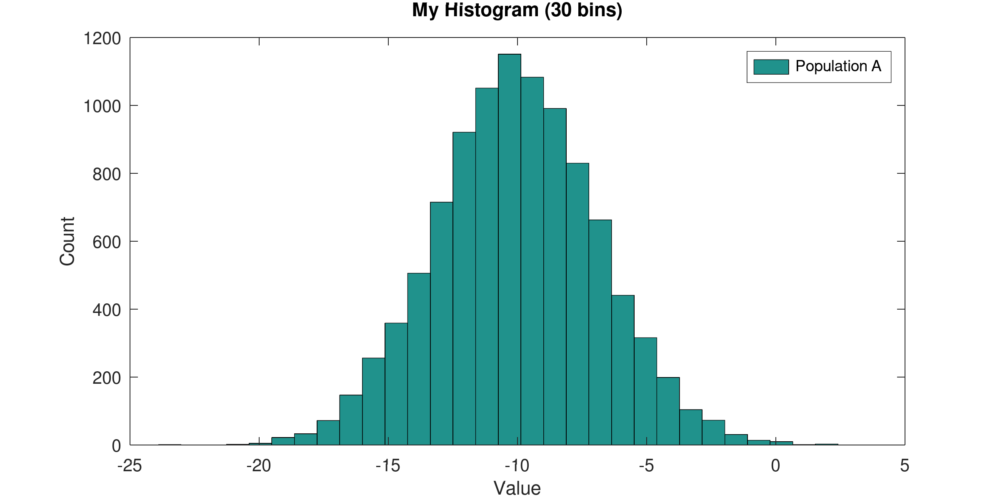

Machine Learning – Week 2
1. Multivariate Linear Regression
1.1. Notation for Multiple Features
The set of training examples to be used is usually in the shape of a table where there are many feature columns and one target column (the price of apartments, in this example).
size bedrooms age price 1200 3 5 9600 1500 4 3 12000 960 8 2 8000 Each training example in the table (each row) is said to be a data point \(d\). The \(i\)-th datapoint is denoted by \(d^{(i)}\). The array of features \(x\) are used by our hypothesis \(h_{\Theta}(x)\) to predict the target \(y\).
\[\text{\(i\)-th row data point}\rightarrow \quad d^{(i)}=\begin{bmatrix} x^{(i)} \\ y^{(i)} \\ \end{bmatrix} \quad \begin{split} &\leftarrow \text{features of \(i\)-th row} \\ &\leftarrow \text{target of \(i\)-th row} \\ \end{split}\]
then, the whole dataset \(D\) can be represented as an array of datapoints:
\[D = \begin{bmatrix} d^{(1)}, d^{(2)}, d^{(2)}, d^{(3)}, \dots \end{bmatrix}\]
- Extended list of features of \(d^{(i)}\): For convenience, it is added an extra 1 at the beginning of the vector \(x\) so in the hypothesis function we have \(n\) parameters and \(n\) features. This 1 matches with the bias parameter \(\Theta_0\). \[x^{(i)} = \begin{bmatrix} x^{(i)}_0 = 1 \\ x^{(i)}_1 \\ x^{(i)}_2 \\ x^{(i)}_3 \\ x^{(i)}_4 \\ \end{bmatrix}\]
- Then, the hypothesis ends up just being the multiplication of the transposed vector of parameters \(\Theta^T\), with the extended vector of features \(x\). (Remember that \(x_0=1\).) \[\begin{split} h_{\Theta}(x) &\xrightarrow{\text{predicts}} y \\ h_{\Theta}(x) &= \Theta_0x_0 + \Theta_1x_1 + \Theta_2x_2 + \Theta_3x_3 + \cdots \\ h_{\Theta}(x) &= \begin{bmatrix}\Theta_0, \Theta_1, \Theta_2 \cdots\end{bmatrix} \times \begin{bmatrix}x_0\\ x_1\\ x_2\\ \cdots\end{bmatrix} \\ h_{\Theta}(x) &= \Theta^T \times x \\ \end{split}\]
1.2. Gradient Descent (GD) for Multiple Variables
- The idea is the same as with less variables. Given that the Cost function is \(\Theta^{T}x^{(i)}\), where \(x^{(i)}\) is the \(i\)-th training example, and \(x^{(i)}_{0} = 1\), to match \(\Theta_0\), then all the derivatives to update all the \(\Theta_{j}\) are easy to compute:
\[\begin{split}
\Theta^{\text{new}}_j := \Theta^{\text{old}}_j -
\textcolor{red}{\alpha}
\textcolor{green}{\frac{\delta}{\delta\Theta_j} J(\Theta)}&\\
%%
\textcolor{green}{\frac{\delta}{\delta\Theta_j} J(\Theta)}& =
\frac{1}{m}\sum^{m}_{i=1}\left(
\big(
h_{\Theta}(x^{(i)})-y^{(i)}
\big)
x^{(i)}_{j}\right)\\
\end{split}\]
- Green: Partial derivative of \(J\) with respect to \(\Theta_j\)
- Red: Learning rate
1.3. GD: Feature Scaling and Normalization
1.3.1. Feature Scaling
- Make sure the values of different features take values that range in similar values, this makes GD converge quickly. (this makes me thing on the disproportioned representation of skin surface in the brain, hands and face are huge, legs and backs are tiny.)
- Different people have different takes in what is a sensible range, but the take-away is “make sure they are in a kinda similar range”.
- This can be acheived by dividing every instance of a feature \(x_j\) by the max value seen in this feature in the whole dataset. This scales all values \(x_j\)s to the range \([0-1]\).
1.3.2. Mean Normalization
- Making the values gravitate around 0, by replacing \(x_j\) with \(x_j - \mu_j\)
- This does not apply to \(x_0\), because it needs to be \(1\).
1.3.3. Both together
- The vid. talks about the denominator being either the range of values \((\text{max}(x_j)-\text{min}(x_j))\) or std deviation. Doing this you end up with values roughly between \([-0.5,0.5]\). \[x^{\text{norm.}}_j := \frac{x_j - \mu_{j}}{\text{max}(x_j) - \text{min}(x_j)}\]
- This denominator was not mentioned in the videos, but I think it is pretty much the same as before, the “max”, by which I am scaling, is also normalized. This leads to values in the range \([-1,1]\). \[x^{\text{norm.}}_j := \frac{x_j - \mu_{j}}{\text{max}(x_j) \textcolor{blue}{- \mu_{j}}}\]
1.4. GD: Learning Rate \(\alpha\)
- The point of learning is to find a \(\Theta^{\star}\) such that \(J(\Theta^{\star})\) is small 1, meaning that the hypothesis \(h_{\Theta^{\star}}(x)\) is, in average, not doing bad for any \(x\) you throw at it.
- Supposedly, the more iterations of learning we accumulate (X axis in the right plot) we get smaller and smaller \(J(\Theta)\), which is the discrepancy between \(h_{\Theta}(x)\) and \(y\). In other words, we should be getting closer and closer to our \(\Theta^{\star}\).
- Then, the point of \(\alpha\) is to determine how quickly we go in the direction of the gradient of \(J(\Theta)\). If my changes in \(\Theta\) (X axis of the left plot) are too abrupt, then, even if I go in the correct direction of the gradient (towards a valley), I can anyway overshoot (as seen by the red arrows in the left plot).
- The effect is that as the training cummulates more and more iterations, we don’t necessarily approach to a smaller \(J(\Theta)\) (as seen in the right plot).
A good debugging technique is to plot \(J(\Theta\) (the right plot) as we refine \(\Theta\) with each iteration, so we can see whether it converges or not.
Here an example with a smaller \(\alpha\). The steps are smaller, so it should take longer to to converge, but the chances of actually converging to our \(\Theta^{\star}\) without getting lost in the way, are better.

- An automatic convergence test could be “if \(J(\Theta)\) is smaller than some \(\varepsilon\), then we say that \(J\) has converged”. But it is often difficult to establish the actual value of such \(\varepsilon\).
It has been demonstrated (by some ML nerds) that if \(\alpha\) is sufficiently small, then it is guaranteed that \(J(\Theta)\) will decrease at every single iteration. The cost of that is that the learning happens to be super slow. Here three examples that shows the feeling of what happens when we vary \(\alpha\):
- A \(\alpha=0.1\)
- B \(\alpha=0.01\)
- C \(\alpha=1\)
1.5. Features and Polynomial Regression
- Our hypothesis need not be linear (as shown below). \[h_{\Theta}(x) = \Theta_0 + \Theta_1x_1 + \Theta_2x_2 + \Theta_3x_3 + \cdots\]
- Sometimes we may think a quadratic or cubic hypothesis fits better the data. \[h_{\Theta}(x) = \Theta_0 + \Theta_1\textcolor{red}{x} + \Theta_2\textcolor{red}{x^2} + \Theta_3\textcolor{red}{x^3} + \cdots\]
- If we have only one original feature \(x_1\), we can create artificial features and then the rest of the algorithm is the same. \[x_2 = x^2_1;\quad x_2 = x^3_1\]
Or compose new features based on serveral originals. For example, if in a database of houses we have:
- frontage length.
- depth lenhth.
We may create a new feature area \(=\) frontage \(\times\) depth. And now my hypothesis may be in function of the area, rather than linear lengths.
2. Computing Parameters Automatically
2.1. Normal Equation
- Gradient descent is an iterative algorithm. An analytical approach is to solve for \(\Theta\).
For example, take this dataset
Then by computing \(\Theta = (X^TX)^{-1}X^Ty\), we get the best \(\Theta\).
X = [1 2104 5 1 45; 1 1416 3 2 40; 1 1534 3 2 30; 1 852 2 1 36]; y = [460; 232; 315; 178]; theta = pinv(X'*X)*X'*y % % test it x_1 = [1 2104 5 1 45]; x_1 * theta
theta = 188.4003 0.3866 -56.1382 -92.9673 -3.7378 ans = 460.00
2.2. Gradient Descent vs Normal Equation
| Gradient Descent | Normal Equation |
|---|---|
| Need to choose \(\alpha\) | No \(\alpha\) to choose |
| Iterative approach \(O(kn^2)\) | No iteration needed. This is an analytical approach \(O(n^3)\) |
| Works well even for huge number of n=features | Need to compute the inverse of a \(n\times n\) matrix. Therefore, slow for large number of features |
At \(n > 1,000,000\) it is probably the only option in a reasonably modern computer.
2.3. Non-invertible matrix
- Some matrices are not invertible
- Redundant features: reduce features, or use ’regularization’ (seen later).
- \(m < n\): more features than training points.
- Ocave’s
pinv()is pseudo-inverse, which does “the right thing” even if the matrix has no inverse (???)
3. Octave Tutorial
3.1. Basic Operations
Not equal is ~=.
1 ~= 2
ans = 1
Logical operations AND and OR are like in C. but xor is a function.
1 && 3 || xor(7,0)
ans = 1
Vector/matrix assignments use spaces for elements in the same row, and semicolons for going to the next row. Transposition is denoted by one simple quotation mark. The function size() returns the dimension of a matrix or vector.
A = [1 2; 3 4] B = [100; 200 300] B_size = size(B) C = [10 20 30; 40 50 60] [C_rows, C_cols] = size(C) C_transposed = C'
A = 1 2 3 4 B = 100 200 300 B_size = 3 1 C = 10 20 30 40 50 60 C_rows = 2 C_cols = 3 C_transposed = 10 40 20 50 30 60
Finishing the line with semicolon doesn’t show it in the output.
a = 32 x = 43; a=1, b=2, c=3 x=7; y=8; z=9;
a = 32 a = 1 b = 2 c = 3
Show stuff on screen.
a = 37; disp(a) printf('Two decimal points: %.2f', a);
37 Two decimal points: 37.00
Auto fill a vector start:step:end (inclusive).
D = 5:2:13
D =
5 7 9 11 13
3.2. Scalar and Element-wise Operations
% Initialize matrix A and B, and scalar s A = [1 2 4; 5 3 2] B = [1 3 4; 1 1 1] s = 2 A_plus_B = A + B A_minus_B = A - B A_elem_mult_B = A .* B one_elem_div_A = 1 ./ A A_elem_square = A .^ s A_dot_s = A * s A_div_s = A / s A_plus_s = A + s
A =
1 2 4
5 3 2
B =
1 3 4
1 1 1
s = 2
A_plus_B =
2 5 8
6 4 3
A_minus_B =
0 -1 0
4 2 1
A_elem_mult_B =
1 6 16
5 3 2
one_elem_div_A =
1.0000 0.5000 0.2500
0.2000 0.3333 0.5000
A_elem_square =
1 4 16
25 9 4
A_dot_s =
2 4 8
10 6 4
A_div_s =
0.5000 1.0000 2.0000
2.5000 1.5000 1.0000
A_plus_s =
3 4 6
7 5 4
3.3. Matrix Operations
A B max_elem_each_col_A = max(A) % in matrix: max of each column. in vector: max A_less_than_B = A < B % compare each element with its corresponding A_greater_than_3 = A > 3 % comapare all elements with a single scalar C = [2 3 9 8; 0 9 1 4] [C_row_geq_5,C_col_geq_5] = find(C >= 5) % indices (row and col) of all elements that are at least 5
A =
1 2 4
5 3 2
B =
1 3 4
1 1 1
max_elem_each_col_A =
5 3 4
A_less_than_B =
0 1 0
0 0 0
A_greater_than_3 =
0 0 1
1 0 0
C =
2 3 9 8
0 9 1 4
C_row_geq_5 =
2
1
1
C_col_geq_5 =
2
3
4
col_wise_sum =
2 12 10 12
row_wise_sum =
22
14
3.4. Indexing and Slicing Matrices
A = [11 12 13 14 15 16; 21 22 23 24 25 26; 31 32 33 34 35 36; 41 42 43 44 45 46] % get element in row 2 and column 4 one_elem = A(2,4)
A = 11 12 13 14 15 16 21 22 23 24 25 26 31 32 33 34 35 36 41 42 43 44 45 46 one_elem = 24
To select a range of elements we can use the m:n notation. You can replace n with end. This allow us to extract submatrices, columns and rows.
m:n- “everything from m to n” (including elements
mandn) 1:n- “all from the beginning to n”
m:end- “all from m to the end”
1:end- “all from beginning to end”. You can also use the shorthand
:
Get a single element
elem = A(4,3)
elem = 43
Get a submatrix defining row range (from 2 to 4) and column range (from 3 to 5).
sub_matrix = A(2:4,3:5)
sub_matrix = 23 24 25 33 34 35 43 44 45
Get the lower right submatrix.
sub_matrix_lower_right = A(2:end,4:end)
sub_matrix_lower_right = 24 25 26 34 35 36 44 45 46
Get the 3rd column and 4th row.
my_col = A(:,3) my_row = A(4,:)
my_col = 13 23 33 43 my_row = 41 42 43 44 45 46
We can pick several non-contiguous elements too with the [a b ...] notation. For example, let’s extract the corners of the matrix A.
corners = A([1 4],[1 6])
corners = 11 16 41 46
Put all elements of a matrix as a single array with the special notation A(:). Note that this is different from A(:,:)
corners(:) % this reshapes the matrix as an array corners(:,:) % this simply selects everything in the matrix preserving its shape
ans = 11 41 16 46 ans = 11 16 41 46
3.5. Moving Data Around
Pasting matrices together
One = ones(2,2) Two = 2*One [One Two] [One; Two]
One = 1 1 1 1 Two = 2 2 2 2 ans = 1 1 2 2 1 1 2 2 ans = 1 1 1 1 2 2 2 2
Show the current working directory, and list its content in one column (-1).
pwd ls -1
ans = /home/claudio/repos/machine-learning/week2 learning_rate_a.png learning_rate_b.png learning_rate_diff_alpha.png my_dataset.txt my_vars.bin my_vars.txt normal_fun_1.png normal_plot.png
Let’s consider the file my_dataset.txt with some data (this block is bash, not octave).
cat my_dataset.txt
2104 5 1 45 460 1416 3 2 40 232 1534 3 2 30 315 852 2 1 36 178
To load that file in Octave, use the function load().
data = load('my_dataset.txt') size(data) % add a column of ones at the left. 4 == size(data)(1) X = [ ones(size(data)(1),1) , data(:,1:(end-1)) ] Y = data(:,end)
data =
2104 5 1 45 460
1416 3 2 40 232
1534 3 2 30 315
852 2 1 36 178
ans =
4 5
X =
1 2104 5 1 45
1 1416 3 2 40
1 1534 3 2 30
1 852 2 1 36
Y =
460
232
315
178
3.6. Show Variables and Save them to Files
To check the defined variables, use the command who or whos (for detailed view)
a = 3; b = [4 5 6]; C = [1 2 3 4 5; 6 7 8 9 0]; who whos
Variables visible from the current scope:
C a ans b
Variables visible from the current scope:
variables in scope: top scope
Attr Name Size Bytes Class
==== ==== ==== ===== =====
C 2x5 80 double
a 1x1 8 double
ans 1x13 13 char
b 1x3 24 double
Total is 27 elements using 125 bytes
Save variables to a file
save('my_vars.txt', 'a', 'b', 'C') save('-binary', 'my_vars.bin', 'a', 'b', 'C')
Now, if in bash (not Octave) we check the files
ls -l my_vars.* echo ">>>> ASCII file:" cat my_vars.txt echo ">>>> Binary file:" hexdump -C my_vars.bin
-rw-r--r--. 1 claudio claudio 213 Jul 20 03:07 my_vars.bin -rw-r--r--. 1 claudio claudio 233 Jul 20 03:07 my_vars.txt >>>> ASCII file: # Created by Octave 7.3.0, Thu Jul 20 03:07:03 2023 PDT <claudio@ncc91277> # name: a # type: scalar 3 # name: b # type: matrix # rows: 1 # columns: 3 4 5 6 # name: C # type: matrix # rows: 2 # columns: 5 1 2 3 4 5 6 7 8 9 0 >>>> Binary file: 00000000 4f 63 74 61 76 65 2d 31 2d 4c 00 01 00 00 00 61 |Octave-1-L.....a| 00000010 00 00 00 00 00 ff 06 00 00 00 73 63 61 6c 61 72 |..........scalar| 00000020 07 00 00 00 00 00 00 08 40 01 00 00 00 62 00 00 |........@....b..| 00000030 00 00 00 ff 06 00 00 00 6d 61 74 72 69 78 fe ff |........matrix..| 00000040 ff ff 01 00 00 00 03 00 00 00 07 00 00 00 00 00 |................| 00000050 00 10 40 00 00 00 00 00 00 14 40 00 00 00 00 00 |..@.......@.....| 00000060 00 18 40 01 00 00 00 43 00 00 00 00 00 ff 06 00 |..@....C........| 00000070 00 00 6d 61 74 72 69 78 fe ff ff ff 02 00 00 00 |..matrix........| 00000080 05 00 00 00 07 00 00 00 00 00 00 f0 3f 00 00 00 |............?...| 00000090 00 00 00 18 40 00 00 00 00 00 00 00 40 00 00 00 |....@.......@...| 000000a0 00 00 00 1c 40 00 00 00 00 00 00 08 40 00 00 00 |....@.......@...| 000000b0 00 00 00 20 40 00 00 00 00 00 00 10 40 00 00 00 |... @.......@...| 000000c0 00 00 00 22 40 00 00 00 00 00 00 14 40 00 00 00 |..."@.......@...| 000000d0 00 00 00 00 00 |.....| 000000d5
3.7. Computing Data
Adding up rows and columns
A = [1 2 4 5; 7 8 3 2] B = [1 3 4 7; 1 1 1 1] C = [2 3 9 8; 0 9 1 4] s = 2 col_wise_sum_A = sum(A,1) % adds up all elements of each column row_wise_sum_C = sum(C,2) % adds up all elements of each row
A =
1 2 4 5
7 8 3 2
B =
1 3 4 7
1 1 1 1
C =
2 3 9 8
0 9 1 4
s = 2
col_wise_sum_A =
8 10 7 7
row_wise_sum_C =
22
14
Flip matrix upside down
D = [1 2 3]' * [1 2 3] upside_down_D = flipud(D)
D = 1 2 3 2 4 6 3 6 9 upside_down_D = 3 6 9 2 4 6 1 2 3
Pseudo-inverse
X = [1 2 3; 3 0 0; 4 5 2] pseudo_inverse = pinv(X)
X = 1 2 3 3 0 0 4 5 2 pseudo_inverse = -6.3596e-17 3.3333e-01 -6.3252e-17 -1.8182e-01 -3.0303e-01 2.7273e-01 4.5455e-01 9.0909e-02 -1.8182e-01
3.8. Plotting Data
X = -10 + sqrt(10)*randn(1,10000); % random variable with mean=-10, and variance=10. hist(X, 30); % plot its histogram with 30 bins xlabel('Value'); ylabel('Count'); title('My Histogram (30 bins)'); legend('Population A'); % Configure and save image set(gca, 'box', 'on'); set(gcf, 'paperposition', [0 0 8 4], 'visible', 'off'); % config axis and figure print('normal_plot.png', '-dpng', '-r300');

t = [0:0.005:0.995]; % x axis range from 0 to almost 1 y1 = sin(8*pi*t); y2 = cos(2.1*pi*(t-0.15)); hold on; plot(t, y1, 'g'); plot(t, y2, 'r'); xlabel('Time'); ylabel('Value'); title('My Plot'); legend('sin(8*pi*t)', 'cos(2.1*pi*t)') % Configure and save image set(gca, 'box', 'on'); set(gcf, 'paperposition', [0 0 8 4], 'visible', 'off'); print('plot_sin.png', '-dpng', '-r300');
t = [0:0.01:0.99]; % x axis range from 0 to 1 y1=sin(3*pi*t); y2=cos(2.1*pi*t)-2; y3=cos(7*pi*(t-0.2))+3.13; map = (y1' * y2) * (eye(size(t)) * y3') .* (y1+y2); hold on; imagesc(map); colorbar; colormap('gray'); axis([1 100 1 100]) xlabel('X axis'); ylabel('Y axis'); title('Heatmap'); % Configure and save image set(gca, 'box', 'on'); set(gcf, 'paperposition', [0 0 8 6], 'visible', 'off'); print('map_wave.png', '-dpng', '-r300');
3.9. Control Statements
3.9.1. Loops and Conditionals
3.9.2. Functions
3.10. Vectorization
4. Programming Assignment
4.1. Submission System
Footnotes:
\(J(\Theta^{\star})\) small, not necessarily the smallest. That would be to find the global minima (wich is cool, but usually unrealistic).